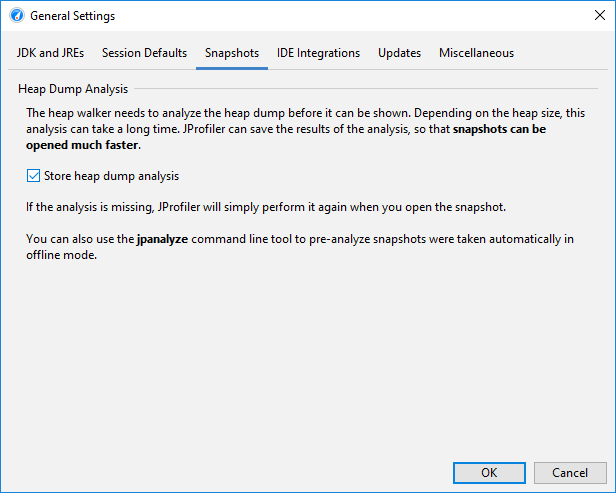
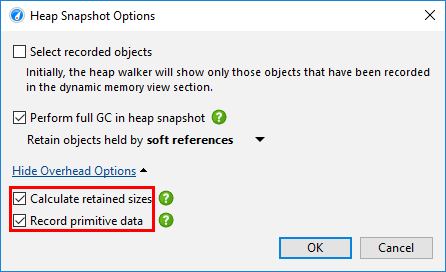

For small heaps, taking a heap snapshot takes a couple of seconds, but for very large heaps, this can be a lengthy process. Insufficient free physical memory can make the calculations a lot slower. For example, if the JVM has a 50 GB heap and you are analyzing the heap dump on your local machine with only 5 GB of free physical memory, JProfiler cannot hold certain indices in memory and the processing time increases disproportionately.
Because JProfiler mainly uses native memory for the heap analysis, it is not recommended to increase
the -Xmx value in the bin/jprofiler.vmoptions file unless you have experienced
an OutOfMemoryError and JProfiler has instructed you to make such a modification. Native memory
will be used automatically if it is available. After the analysis has completed and the internal database has
been built, the native memory will be released.
For a live snapshot, the analysis is calculated immediately after taking the heap dump. When you save a snapshot,
the analysis is saved to a directory with the suffix .analysis next to the snapshot file. When
you open the snapshot file, the heap walker will be available very quickly. If you delete the
.analysis
directory, the calculation will be performed again when the snapshot is opened, so if you
send the snapshot to somebody else, you don't have to send the analysis directory along with it.
If you want to save memory on disk or if the generated .analysis directories are inconvenient,
you can disable their creation in the general settings.

HPROF snapshots and JProfiler snapshots that were saved with offline profiling
do not have an .analysis directory next to them, because the analysis is performed by the JProfiler
UI and not by the profiling agent. If you do not want to wait for the calculation when opening such snapshots,
the jpanalyze command line executable can be used to
pre-analyze
snapshots.
It is advisable to open snapshots from writable directories. When you open a snapshot without an analysis, and its directory is not writable, a temporary location is used for the analysis. The calculation then has to be repeated each time the snapshot is opened.
A big part of the analysis is the calculation of retained sizes. If the processing time is too long and you don't need the retained sizes, you can disable their calculation in the overhead options of the heap walker options dialog. In addition to retained sizes, the "Biggest objects" view will not be available either in that case. Not recording primitive data makes the heap snapshot smaller, but you will not be able to see them in the reference views. The same options are presented when opening snapshots if you choose Customize analysis in the file chooser dialog.
